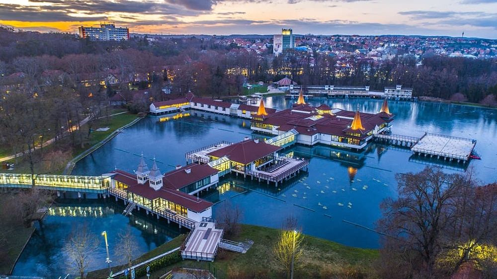

Explorați Hévíz - Bijuteria termală a Ungariei
Hévíz, situat în vestul Ungariei, este un oraș renumit pentru lacul termal și băile sale, oferind o varietate de experiențe unice pentru vizitatori:
-

Lacul termal - Bijuterie naturală
Explorați faimosul Lac Hévíz, unul dintre cele mai mari lacuri termale naturale din lume.
-

Băile termale - Relaxare și vindecare
Relaxează-te în băile termale înconjurat de natură și bucură-te de proprietățile vindecătoare ale apelor termale.
-

Wellness - Răsfăț și reconectare
Descoperă facilitățile de wellness și spa pentru o experiență completă de relaxare și refacere.
-

Natură - În mijlocul frumuseții naturale
Explorează parcurile și ariile naturale din jurul orașului, care oferă o oază de liniște.
-

Gastronomie - Delicii locale
Savoura mâncărurile tradiționale ungurești și bucură-te de preparatele din ingrediente locale.
Concluzii
Hévíz este un loc de relaxare și regenerare, unde natura și băile termale se îmbină pentru o experiență unică.